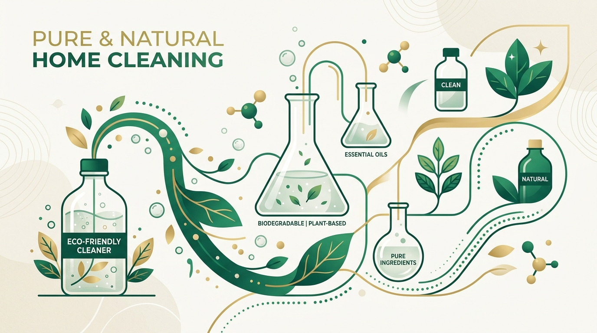

In the highly consolidated Indian household cleaning sector, legacy brands like Vim, Surf Excel, and Lizol have long held near-monopolistic market shares. However, D2C challenger brand Beco has disrupted this status quo with its **#WarOnWhatsHidden** campaign.
As a performance marketer, analyzing Beco's growth model reveals a masterclass in competitor positioning, educative funnel design, and multichannel distribution. Instead of relying on traditional 'eco-friendly' tropes, Beco utilizes aggressive ingredient-led transparency to force consumers to scrutinize what is hidden inside their daily household cleaners.
1. The Core Strategy: Ingredient Transparency (#WarOnWhatsHidden)
Most eco-friendly brands market themselves on soft concepts like "saving the planet." Beco took a different path by focusing on immediate household safety. Their campaign actively highlights the hidden chemicals in mass-market cleaners, such as Benzisothiazolinone (BIT) and Linear Alkylbenzene Sulfonate (LAS), citing independent laboratory tests. By contrasting these toxins against their own plant-based formulations, Beco makes safety a tangible concern for families and pet owners.
2. The Funnel Strategy: "Entertain First, Educate Later"
Sustainability can sometimes feel like a lecture, which creates a friction point for customer acquisition. Beco overcomes this by utilizing sharp, culturally relevant, and high-energy video content. By partnering with prominent environmental advocates like Dia Mirza and creating relatable, humorous ads about daily cleaning frustrations, Beco captures attention at the top of the funnel before introducing their educational messaging.
3. Omnichannel Performance & Marketplace Scaling
A brilliant creative campaign only works if the conversion funnel is seamless. Beco backed their brand messaging with aggressive performance marketing across quick-commerce platforms like Blinkit, Swiggy Instamart, and Zepto. By capturing high-intent search terms on marketplaces (e.g., "natural dishwash", "organic floor cleaner"), they ensured that interest generated by their social media campaigns translated immediately into sales, lowering overall customer acquisition costs (CAC).
Key Takeaways for Growth Marketers
Beco's success shows that challenger brands do not need massive corporate budgets to compete with industry giants. By identifying a clear differentiator (ingredient safety), creating entertaining, high-impact creatives, and optimizing distribution through modern quick-commerce marketplaces, you can carve out a profitable market share in competitive spaces.
Frequently Asked Questions
What was Beco's #WarOnWhatsHidden campaign strategy?
Beco's campaign highlighted hidden toxic chemicals in mass-market cleaners (like BIT and LAS) using laboratory certifications, positioning their own plant-based formulations as a safer, toxin-free alternative.
How does Beco use "entertain first, educate later" in their D2C marketing?
Beco captures top-of-funnel attention with sharp, relatable, and humorous video ads before funneling users to educational content about ingredient safety, converting awareness into conversions.
How did Beco leverage quick commerce (Q-commerce) for performance scaling?
Beco integrated their ad campaigns with direct purchase options on quick-commerce apps like Blinkit, Zepto, and Instamart. Targeting high-intent marketplace search queries helped them capture immediate demand and reduce acquisition cost (CAC).